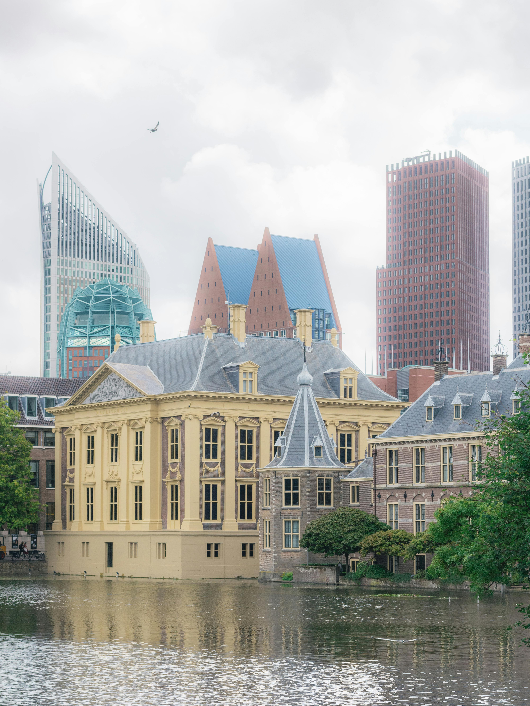
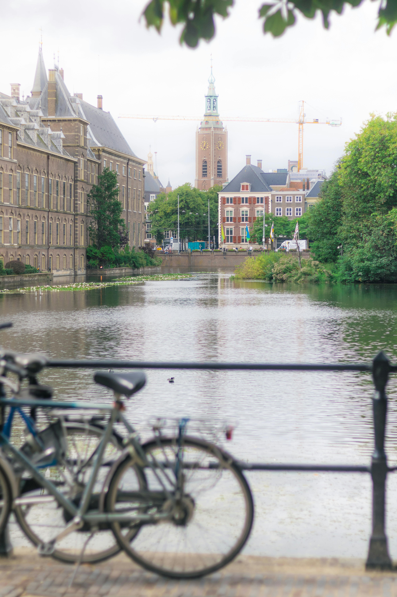
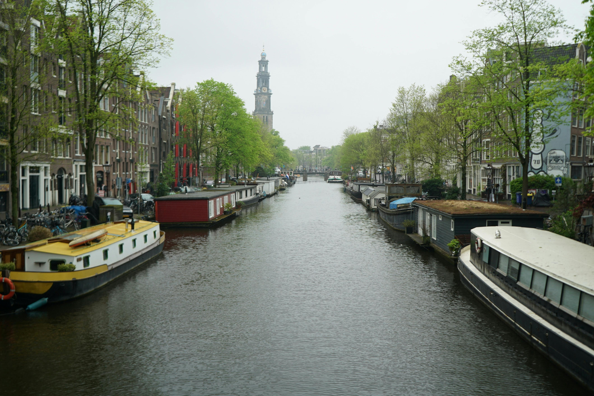

Netherlands —
canals, masterpieces and the Sex Museum
Nicola visited The Hague on a day trip from Belgium in 2009 — the Mauritshuis, Vermeer's Girl with a Pearl Earring and the beautiful Scheveningen beach. Then Amsterdam multiple times, most recently in 2019 with friends for three nights in the summer heat — Anne Frank's House, canal cruises, the Rijksmuseum, the Heineken Experience, the Red Light District (respectfully) and yes — the Sex Museum, complete with a larger than life exhibit that we are going to leave to your imagination. 😄
The Hague — a day trip from Belgium that was absolutely worth it
In 2009, while living in Belgium, Nicola took a day trip across the border to The Hague — the seat of the Dutch government and international court of justice, and one of the most underrated cities in the Netherlands. Cleaner, quieter and more elegant than Amsterdam, with world-class art and a beautiful beach thrown in.
Home to Vermeer's Girl with a Pearl Earring and an extraordinary collection of Dutch Golden Age masterpieces. Compact enough not to feel overwhelming — every single painting in here is worth stopping for. An absolute must.
The Hague is unique in that it offers both a proper city break and a beautiful seaside destination together. Scheveningen beach is lovely — walk along the coast, visit The Pier SkyView ferris wheel and enjoy a cocktail at sunset.
Dedicated to the extraordinary optical illusion artwork of M.C. Escher — one of the most mind-bending and fascinating small museums in the Netherlands. Brilliant fun and genuinely impressive.


Amsterdam — canals, culture and three sweaty summer nights
Nicola visited Amsterdam multiple times — most recently in 2019 with friends for three nights in the summer. Amsterdam in a heatwave is a particular experience — the city is stunning but the heat bouncing off the canal water and the cobblestones makes you very grateful for air-conditioned museums. Which turned out to be an excellent way to see the city.
Days in the Rijksmuseum, the Van Gogh Museum and Anne Frank's House. Evenings on the canal boats, in the Jordaan bars, wandering the lit-up bridges. It was brilliant.



What to see and do in Amsterdam
One of the most powerful and emotional experiences in Amsterdam — walking through the secret annex where Anne Frank and her family hid for over two years is deeply moving. Book well in advance — tickets sell out weeks ahead. Do not miss this.
Sounds touristy because it is — but it's also one of the best ways to see Amsterdam properly. The city looks completely different from the water, especially in the evening when the bridges light up. Do an evening cruise if you can.
Probably the nicest area in Amsterdam to just wander around. Canals, independent cafés, little wine bars, vintage shops and quieter streets away from the chaos of the main tourist zones. Beautiful at any time of day.
The Rijksmuseum building alone is worth the visit — and Museumplein is a lovely area to relax in. The Van Gogh Museum next door is brilliant. Even if you are not massively into art, both are genuinely impressive experiences.
The original Heineken brewery turned into a fun and well-produced museum experience. The history of the brand, the brewing process and — crucially — the beer at the end. Book in advance.
Worth walking through at least once — busy, lively and very eye-opening. The respectful approach is to walk through, take it in and not gawk at the windows. It is a legal, regulated industry and the workers deserve dignity. Don't take photos.
😳 The Sex Museum — well, we were there anyway
Amsterdam's Sex Museum is exactly what it sounds like — a museum dedicated to human sexuality throughout history, housed in one of the oldest buildings on Damrak. It is irreverent, occasionally shocking, frequently hilarious and genuinely educational in places. The exhibits range from ancient erotic art to rather more modern displays.
There is a larger than life anatomical exhibit near the entrance that catches every single visitor completely off guard. We will say no more than that. You will know it when you see it. 😄
It is cheap, quick and absolutely something to tick off in Amsterdam. Go with a sense of humour and an open mind.

Book a Netherlands tour through TourRadar
The Netherlands combines brilliantly with Belgium and Germany on a wider Benelux or Northern Europe tour. TourRadar has excellent options covering the region.
Disclosure: Affiliate links — if you book through them we may earn a small commission at no extra cost to you.
Things to do in the Netherlands — via GetYourGuide
Anne Frank's House skip-the-line, Amsterdam canal cruises, Rijksmuseum tickets, Heineken Experience, The Hague day trips and more:
Disclosure: If you book through these links we may earn a small commission at no extra cost to you.
Common questions
Netherlands FAQ
What to pack for the Netherlands
Netherlands packing essentials
Amsterdam and The Hague involve a lot of walking and cycling — and the weather can be unpredictable even in summer.
The Netherlands weather is famously changeable — a lightweight waterproof is essential even in summer.
View on Amazon →Amsterdam's cobblestones are beautiful and brutal — good shoes are essential for long days exploring.
View on Amazon →Stay connected across the Netherlands without roaming charges — essential for maps and navigation.
View on Amazon →Long days in museums and on canal boats drain batteries — keep one charged.
View on Amazon →Netherlands uses Type C and F plugs — different to Ireland. Don't get caught out on arrival.
View on Amazon →Not a packing item but the most important thing to do before your trip — tickets sell out weeks ahead.
Book on GYG →Disclosure: These are affiliate links. If you buy or book through them we may earn a small commission at no extra cost to you.
Planning your own Netherlands trip?
Book Anne Frank's House the moment you decide you're going. Do the canal cruise in the evening. Wander the Jordaan. Visit the Mauritshuis in The Hague. And maybe pop into the Sex Museum — just for the story. 😄
Affiliate disclosure: if you book through our links we may earn a small commission at no cost to you.